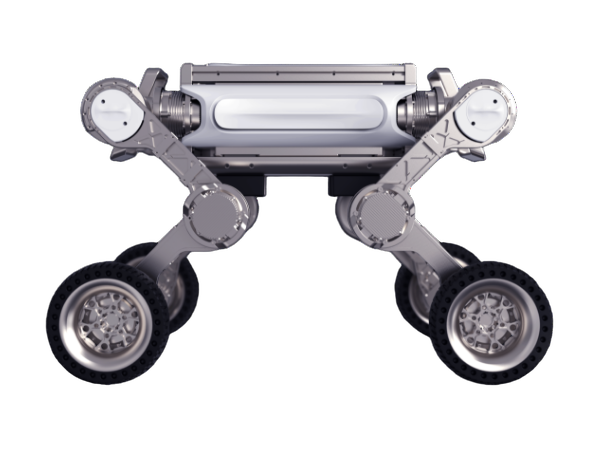

Black Panther W
Other variants BPW · BPW-Auto
Figures below are for Black Panther W.
MirrorMe Technology Black Panther W is a quadruped robot from China, announced 2026.
Sources retrieved: 19 November 2026 (A, B)
- Applications
- Intended use, per the manufacturer
- “Future applications in firefighting and industrial inspection”Source and note: Intended use, per the manufacturerB m.sohu.com/a/1090519699_104421 · Retrieved 19 November 2026
- Indicative price
- Not stated

Manufacturer's own photo. Press photo: MirrorMe Technology (mirrormetech.com), Black Panther W product page image.
Specifications
13 of 33 stated 20 not stated
20 fields hidden
How to read the figuresShow guideClose
- not statedNo source
- noStated by a source
- 0Reported as zero
- ASource
- A*Source with a caveat (select it)
- CERecords only what the manufacturer states regarding CE marking.
Select a source marker for source details and notes.
Physical9/14 disclosed
Power2/5 disclosed
Sensing and autonomy0/6 disclosed
Payload and expansion2/3 disclosed
Commercial0/1 disclosed
Compliance & certifications0/4 disclosed
Against the field
Each strip holds every robot of this type in the guide that states the figure, one bar per group of values. Further right means a larger figure, not a better robot. A taller bar means more robots in that group.
Weight
approximately 30kgapproximately 66.1lbOur conversion from 30 kg. The manufacturer does not state an imperial figure itself, so the conversion has no source of its own.
144 quadrupeds state a weight
74 state a higher figure, 64 a lower one. 5 state only a bound (≥ or ≤) and are not ranked. Log scale: each step along the axis multiplies the value.
Degrees of freedom
16DoF
86 quadrupeds state degrees of freedom
1 states a higher figure, 72 a lower one. 11 more state exactly the same figure. 1 states only a bound (≥ or ≤) and is not ranked.
Runtime
360minNote: at load 0 kg
121 quadrupeds state a runtime
7 state a higher figure, 80 a lower one. 1 more states exactly the same figure. 5 state a range that includes this figure. 27 state only a bound (≥ or ≤) and are not ranked.
Max speed
18km/h11.2mphOur conversion from 5 m/s. The manufacturer does not state an imperial figure itself, so the conversion has no source of its own.
131 quadrupeds state a top speed
12 state a higher figure, 77 a lower one. 8 more state exactly the same figure. 2 state a range that includes this figure. 31 state only a bound (≥ or ≤) and are not ranked.
Notes
MirrorMe Technology presents Black Panther W (BPW) as a modular industrial wheel-legged robot dog and lists two variants, BPW and BPW-Auto.
A Sohu report on the 18 October 2026 Robot Warrior Challenge describes BPW as not yet officially released, with a 20 kg rated payload and 40 kg maximum payload.
MirrorMe Technology states that it is headquartered in Beijing.
Sources
One line per source, not per figure: a source has one retrieval date.
- Amirrormetech.com/en/product_6.htmlMain source. Retrieved 19 November 2026
- Bm.sohu.com/a/1090519699_104421Secondary. Retrieved 19 November 2026
More robots
Same manufacturer

All robots from MirrorMe Technology